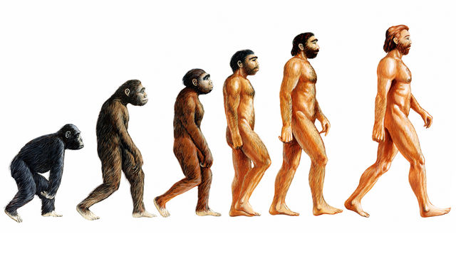

Darwin's
Journey
Charles Darwin dan Teori Evolusi
Ketika masih dalam pelayaran, Henslow dengan hati-hati memperkuat reputasi bekas muridnya dengan memberikan kepada sejumlah naturalis terpilh akses kepada contoh-contoh fosil dan salinan-salinan tercetak tulisan-tulisan geologis Darwin. Ketika Beagle kembali pada 2 Oktober 1836, Darwin telah menjadi terkenal di kalangan ilmiah.
Darwin mengunjungi keluarganya di Shrewsbury dan ayahnya mengembangkan tabungan agar Darwin dapat menjadi seorang ilmuwan yang didukung dengan dananya sendiri. Kemudian Darwin pergi ke Cambridge dan membujuk Henslow agar mengerjakan deskripsi botanis tentang tanaman-tanaman modern yang telah dikumpulkannya.
Setelah itu Darwin berkeliling ke lembaga-lembaga di London untuk mencari naturalis terbaik yang ada untuk menggambarkan koleksi-koleksinya yang lain untuk penerbitan pada waktu yang tepat. Charles Lyell yang sangat bersemangat menemui Darwin pada 29 Oktober dan memperkenalkannya kepada Richard Owen seorang ahli anatomi yang sedang naik daun.
Setelah mengerjakan koleksi tulang-tulang fosil Darwin pada Perhimpunan Ahli Bedah Kerajaan-nya, Owen menimbulkan kejutan besar dengan mengungkapkan bahwa sebagian daripadanya berasal dari tikus-tikus dan sejenis binatang merayap raksasa yang telah musnah. Hal ini meningkatkan reputasi Darwin.
